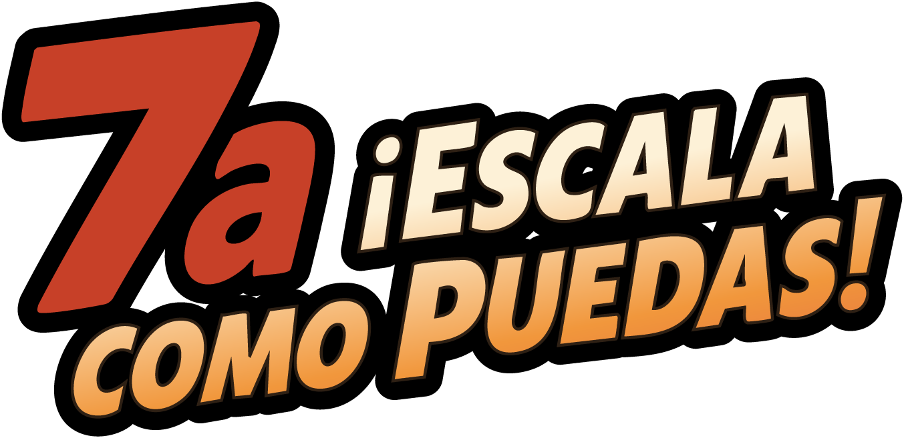
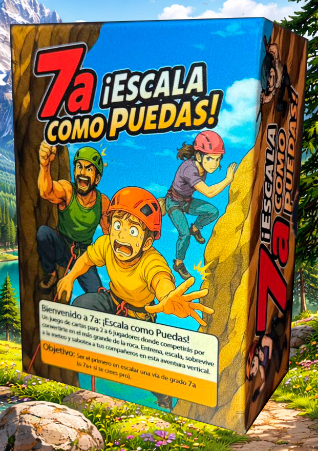
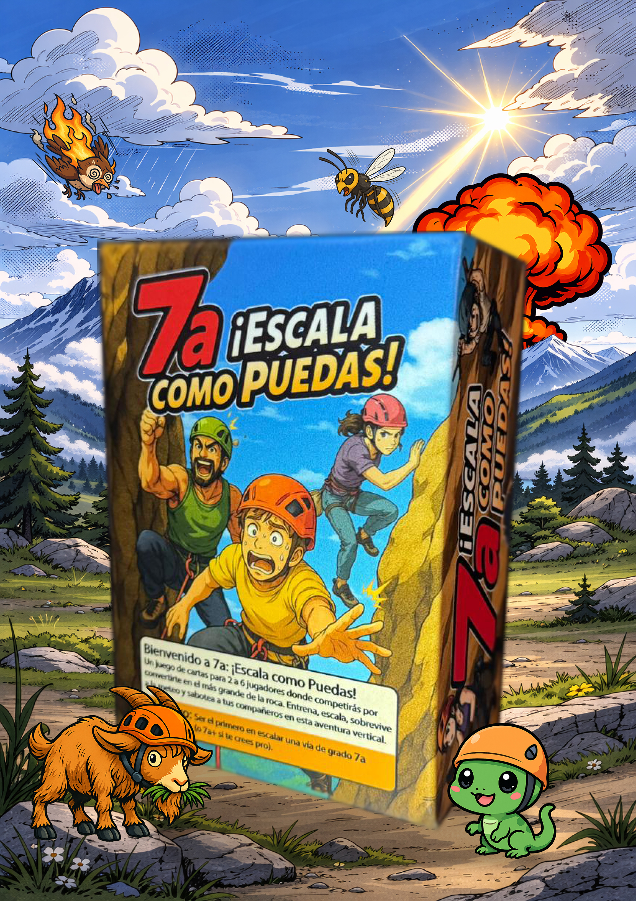
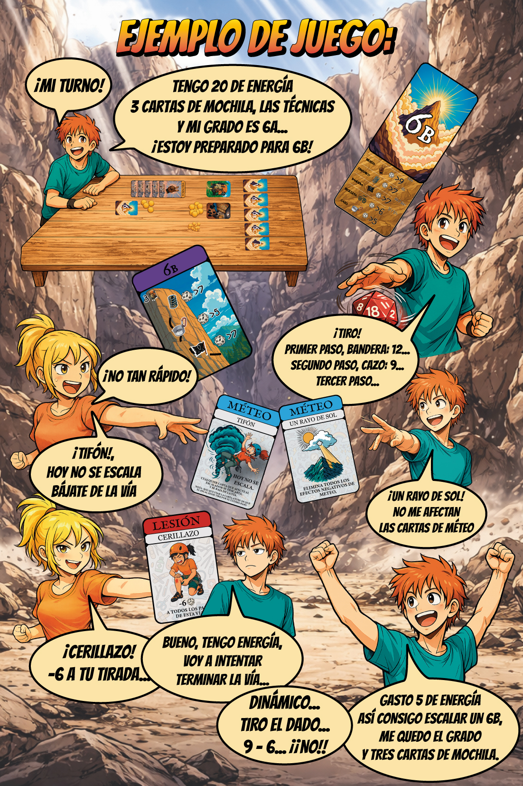
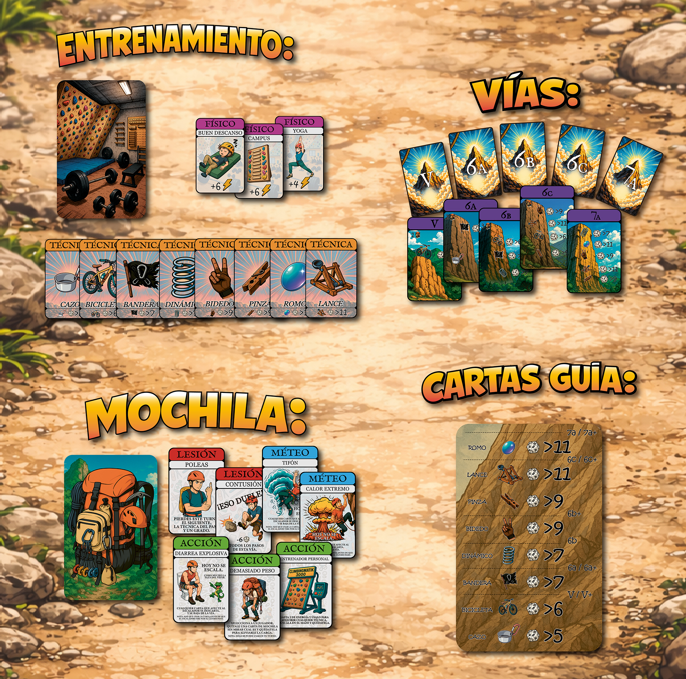

Escalada deportiva en mesa
Un juego de cartas para 2 a 6 jugadores donde cada turno te obliga a decidir si entrenar o lanzarte a la pared.

... siguiendo el proyecto actualizando...Juego de cartas · Escalada deportiva · Humor · Piques
Sé el primer escalador en completar una vía de grado 7a. Entrena, escala, gestiona tu energía y sobrevive a la meteo, las lesiones y los sabotajes.

La premisa
Un juego de cartas para 2 a 6 jugadores donde cada turno te obliga a decidir si entrenar o lanzarte a la pared.
Supera pasos de vía con técnicas como cazo, bicicleta, bandera, dinámico, bidedo, pinza, romo o lance.
Gana físico, cuida tus recursos y decide cuándo gastar energía para no caerte antes del encadene.
Usa cartas de mochila para ayudarte o complicar la vía de otros escaladores.
Importante
7a ¡Escala como puedas! se abrirá muy pronto en Verkami. Ahora mismo aún no se puede comprar el juego: lo importante es apuntarse para recibir el aviso cuando se active la campaña.
Entras en Vkm.is/7a y sigues el proyecto. No pagas nada y no te comprometes a comprar.
Cuando la campaña esté activa, Verkami avisará a las personas que se hayan apuntado.
Entonces podrás apoyar el juego escogiendo la recompensa que prefieras.
Si se alcanza el objetivo, el proyecto se fabrica. Si no se alcanza, Verkami no cobra la aportación.
Qué contiene

Vídeo explicativo
Un vistazo rápido al ritmo del juego: entrenar, escalar, tirar el dado y sobrevivir al caos de la mesa.
Cómo se juega
La partida se entiende mejor viendo una vía en acción: entrenas, eliges cuándo escalar, resuelves pasos con el dado y gestionas la energía para no caerte antes de llegar al encadene.

Cartas y caos controlado
Vías, entrenamiento, meteo, lesiones, acciones y mochila. Todo puede cambiar justo cuando crees que vas a encadenar.

Precampaña abierta
Ahora toca seguir el proyecto en Verkami para recibir el aviso cuando se abra la campaña.